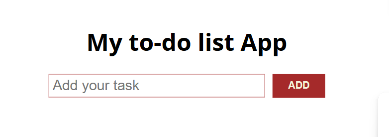
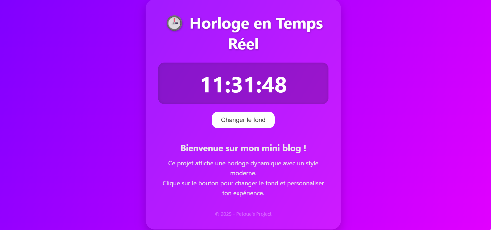
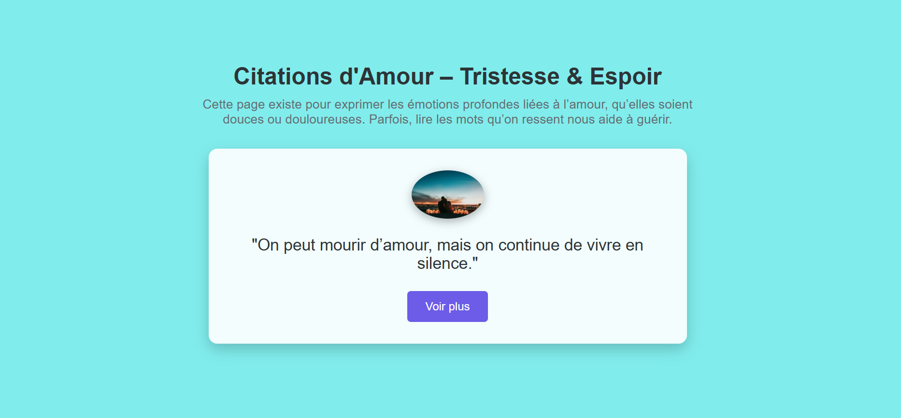
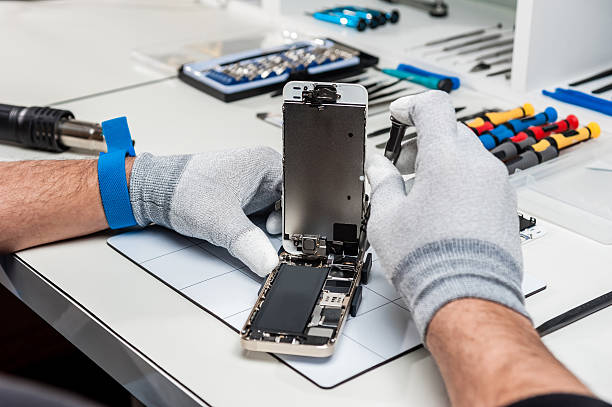
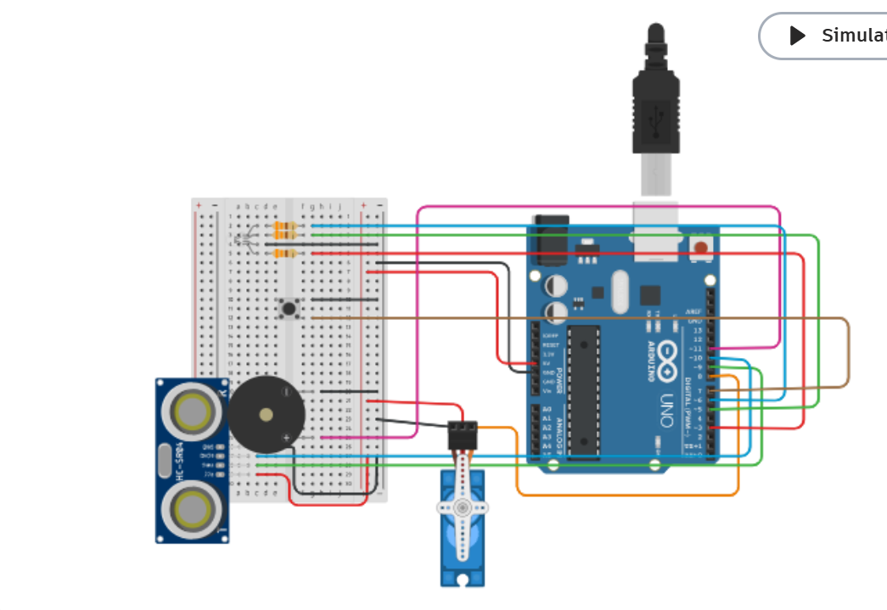

Mes Projets
Accueil
Projets
Contact
TO DO LISTE

Mes Projets
Découvrez quelques-uns de mes travaux en développement web et design graphique.

Horloge Temps Réel
Voir le projet

Citation Inspirant
Voir le projet
Flyer Studio
Voir le projet

Depannage
Voir le projet
reseau
Voir le projet

Projet Arduino
Voir le projet
×